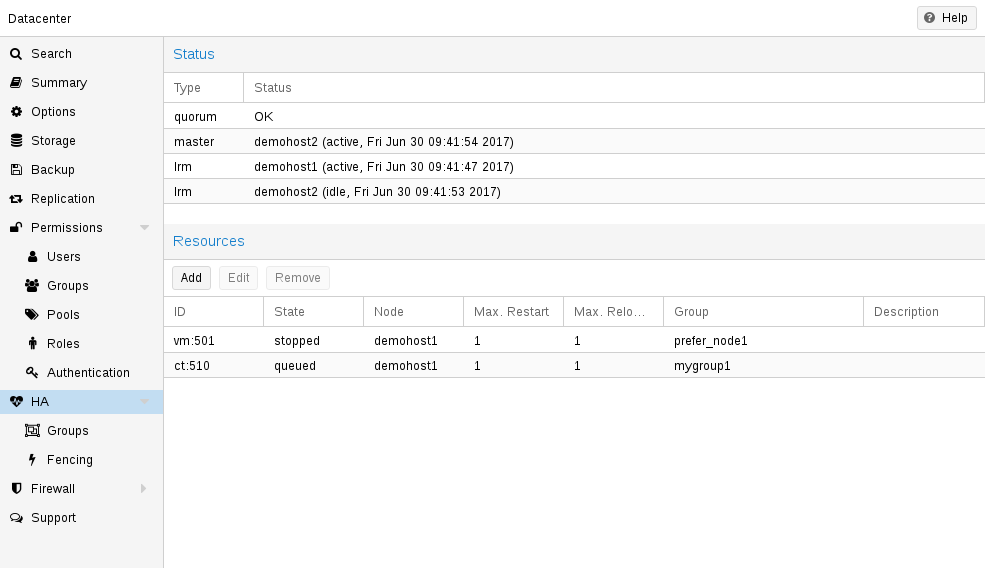

12. HA(고가용성)#
현대 사회는 네트워크를 통해 컴퓨터가 제공하는 정보에 크게 의존하고 있습니다. 모바일 디바이스는 사람들이 언제 어디서나 네트워크에 액세스할 수 있기 때문에 이러한 의존도를 더욱 증폭시켰습니다. 이러한 서비스를 제공하는 경우 대부분의 시간 동안 서비스를 이용할 수 있는 것이 매우 중요합니다.
가용성은 주어진 간격 동안 서비스를 사용할 수 있는 총 시간인 (A)와 간격의 길이인 (B)의 비율로 수학적으로 정의할 수 있습니다. 일반적으로 특정 연도의 가동 시간 대비 백분율로 표현됩니다.
 가용성 - 연간 다운타임
가용성 - 연간 다운타임
가용성 % |
연간 다운타임 |
|---|---|
99 |
3.65일 |
99.9 |
8.76시간 |
99.99 |
52.56분 |
99.999 |
5.26분 |
99.9999 |
31.5초 |
99.99999 |
3.15초 |
가용성을 높이는 방법에는 여러 가지가 있습니다. 가장 우아한 해결책은 소프트웨어를 다시 작성하여 여러 호스트에서 동시에 실행할 수 있도록 하는 것입니다. 소프트웨어 자체에 오류를 감지하고 장애 조치를 수행할 수 있는 방법이 있어야 합니다. 읽기 전용 웹 페이지만 제공하려는 경우에는 비교적 간단합니다. 하지만 소프트웨어를 직접 수정할 수 없기 때문에 일반적으로 복잡하고 때로는 불가능하기도 합니다. 다음 솔루션은 소프트웨어를 수정하지 않고도 작동합니다:
신뢰할 수 있는 ‘서버’ 컴포넌트 사용
동일한 기능을 가진 컴퓨터 구성요소라도 구성요소의 품질에 따라 신뢰성 수치가 달라질 수 있습니다. 대부분의 공급업체는 안정성이 높은 구성 요소를 “서버” 구성 요소로 판매하며, 일반적으로 더 높은 가격에 판매합니다.
단일 장애 지점 제거(중복 구성 요소)
무정전 전원 공급 장치(UPS) 사용
서버에 중복 전원 공급 장치 사용
ECC-RAM 사용
중복 네트워크 하드웨어 사용
로컬 스토리지에 RAID 사용
VM 데이터에 분산형 중복 스토리지 사용
다운타임 감소
신속한 관리자 액세스(연중무휴 24시간)
예비 부품의 가용성(Proxmox VE 클러스터의 다른 노드)
자동 오류 감지(
ha-manager에서 제공)자동 페일오버(
ha-manager에서 제공)
Proxmox VE와 같은 가상화 환경은 ‘하드웨어’ 종속성을 제거하기 때문에 고가용성을 훨씬 쉽게 달성할 수 있습니다. 또한 중복 스토리지 및 네트워크 장치의 설정과 사용을 지원하므로 한 호스트에 장애가 발생하면 클러스터 내의 다른 호스트에서 해당 서비스를 간단히 시작할 수 있습니다.
더 좋은 점은 Proxmox VE가 ha-manager라는 소프트웨어 스택을 제공하므로 이를 자동으로 수행할 수 있다는 것입니다. 자동으로 오류를 감지하고 자동 페일오버를 수행할 수 있습니다.
Proxmox VE ha-manager는 “자동화된” 관리자처럼 작동합니다. 먼저, 관리할 리소스(VM, 컨테이너 등)를 구성합니다. 그런 다음 ha-manager가 올바른 기능을 관찰하고 오류 발생 시 다른 노드로의 서비스 장애 조치를 처리합니다. ha-manager는 서비스를 시작, 중지, 재배치 및 마이그레이션할 수 있는 일반 사용자 요청도 처리할 수 있습니다.
하지만 고가용성에는 대가가 따릅니다. 고품질 구성 요소는 더 비싸고, 이중화하면 비용이 최소 두 배로 증가합니다. 예비 부품을 추가하면 비용이 더 증가합니다. 따라서 이점을 신중하게 계산하고 이러한 추가 비용과 비교해야 합니다.
12.1. 요구 사항#
HA를 시작하기 전에 다음 요구 사항을 충족해야 합니다:
최소 3개의 클러스터 노드(안정적인 쿼럼을 확보하기 위해)
VM 및 컨테이너를 위한 공유 스토리지
하드웨어 이중화(모든 곳에)
신뢰할 수 있는 “서버” 구성 요소 사용
하드웨어 워치독 - 사용할 수 없는 경우 Linux 커널 소프트웨어 워치독(softdog)으로 돌아갑니다.
하드웨어 펜싱 장치(옵션)
12.2. 리소스#
ha-manager가 처리하는 기본 관리 단위를 리소스라고 부릅니다. 리소스(“서비스”라고도 함)는 리소스 유형과 유형별 ID(예: vm:100)로 구성된 서비스 ID(SID)로 고유하게 식별됩니다. 이 예는 ID가 100인 vm(가상 머신) 유형의 리소스입니다.
현재로서는 가상 머신과 컨테이너라는 두 가지 중요한 리소스 유형이 있습니다. 여기서 한 가지 기본적인 아이디어는 관련 소프트웨어를 이러한 가상 머신이나 컨테이너에 번들로 묶을 수 있으므로 rgmanager에서 했던 것처럼 다른 서비스에서 하나의 큰 서비스를 구성할 필요가 없다는 것입니다. 일반적으로 HA 관리 리소스는 다른 리소스에 의존해서는 안 됩니다.
12.3. 관리 작업#
이 섹션에서는 일반적인 관리 작업에 대한 간략한 개요를 제공합니다. 첫 번째 단계는 리소스에 대해 HA를 사용 설정하는 것입니다. 리소스를 HA 리소스 구성에 추가하면 됩니다. GUI를 사용하거나 다음과 같이 명령줄 도구를 사용하여 이 작업을 수행할 수 있습니다:
다음과 같이 명령줄 도구를 사용해도 됩니다.#
이 섹션에서는 일반적인 관리 작업에 대한 간략한 개요를 제공합니다. 첫 번째 단계는 리소스에 대해 HA를 사용 설정하는 것입니다. 리소스를 HA 리소스 구성에 추가하면 됩니다. 이 작업은 GUI를 사용하거나 명령줄 도구를 사용하여 간단히 수행할 수 있습니다:
# ha-manager add vm:100
이제 HA 스택이 리소스를 시작하고 계속 실행하려고 시도합니다. “요청된” 리소스 상태를 구성할 수 있다는 점에 유의하세요. 예를 들어 HA 스택이 리소스를 중지하도록 설정할 수 있습니다:
# ha-manager set vm:100 --state stopped
를 설정하고 나중에 다시 시작할 수 있습니다:
# ha-manager set vm:100 --state started
일반 VM 및 컨테이너 관리 명령을 사용할 수도 있습니다. 다음과 같이 명령을 자동으로 HA 스택으로 전달합니다.
# qm start 100
는 요청된 상태를 시작됨으로 설정하기만 하면 됩니다. 요청된 상태를 중지 상태로 설정하는 qm stop도 마찬가지입니다.
현재 HA 리소스 구성을 보려면 다음을 사용하세요:
# ha-manager config
vm:100
state stopped
그리고 실제 HA 관리자 및 리소스 상태를 확인할 수 있습니다:
# ha-manager status
quorum OK
master node1 (active, Wed Nov 23 11:07:23 2016)
lrm elsa (active, Wed Nov 23 11:07:19 2016)
service vm:100 (node1, started)
다른 노드로 리소스 마이그레이션을 시작할 수도 있습니다:
# ha-manager migrate vm:100 node2
이 경우 온라인 마이그레이션을 사용하며 VM을 계속 실행하려고 시도합니다. 온라인 마이그레이션은 네트워크를 통해 사용된 모든 메모리를 전송해야 하므로 VM을 중지한 다음 새 노드에서 다시 시작하는 것이 더 빠른 경우가 있습니다. 이 작업은 relocate 명령을 사용하여 수행할 수 있습니다:
# ha-manager relocate vm:100 node2
마지막으로 다음 명령을 사용하여 HA 구성에서 리소스를 제거할 수 있습니다:
# ha-manager remove vm:100
그러나 모든 HA 관련 작업은 GUI에서 수행할 수 있으므로 명령줄을 전혀 사용할 필요가 없습니다.
12.4. 작동 방식#
이 섹션에서는 Proxmox VE HA 매니저 내부에 대한 자세한 설명을 제공합니다. 관련된 모든 데몬과 이들이 함께 작동하는 방식에 대해 설명합니다. HA를 제공하기 위해 각 노드에서 두 개의 데몬이 실행됩니다:
pve-ha-lrm
로컬 노드에서 실행 중인 서비스를 제어하는 로컬 리소스 관리자(LRM)입니다. 현재 관리자 상태 파일에서 서비스에 대한 요청된 상태를 읽고 각 명령을 실행합니다.
pve-ha-crm
클러스터 리소스 관리자(CRM)로, 클러스터 전체에 대한 결정을 내립니다. LRM에 명령을 보내고, 결과를 처리하며, 장애가 발생하면 리소스를 다른 노드로 이동합니다. CRM은 노드 펜싱도 처리합니다.
LRM 및 CRM의 잠금 기능
잠금은 당사의 분산 구성 파일 시스템(pmxcfs)에서 제공합니다. 각 LRM이 한 번만 활성화되어 작동하도록 보장하는 데 사용됩니다. LRM은 잠금을 유지할 때만 작업을 실행하므로, 잠금을 획득할 수 있는 경우 실패한 노드를 펜싱된 것으로 표시할 수 있습니다. 그러면 현재 알려지지 않은 장애 노드의 간섭 없이 장애가 발생한 HA 서비스를 안전하게 복구할 수 있습니다. 이 모든 것은 현재 관리자 마스터 잠금을 보유하고 있는 CRM이 감독합니다.
12.4.1. 서비스 상태#
CRM은 서비스 상태 열거형을 사용하여 현재 서비스 상태를 기록합니다. 이 상태는 GUI에 표시되며 ha-manager 명령줄 도구를 사용하여 쿼리할 수 있습니다:
# ha-manager status
quorum OK
master elsa (active, Mon Nov 21 07:23:29 2016)
lrm elsa (active, Mon Nov 21 07:23:22 2016)
service ct:100 (elsa, stopped)
service ct:102 (elsa, started)
service vm:501 (elsa, started)
다음은 가능한 상태 목록입니다:
stopped
서비스가 중지됨(LRM에서 확인됨). 중지된 서비스가 여전히 실행 중인 것을 LRM이 감지하면 다시 중지합니다.
request_stop
서비스를 중지해야 합니다. CRM이 LRM의 확인을 기다립니다.
stopping
보류 중인 중지 요청입니다. 그러나 CRM이 지금까지 요청을 받지 못했습니다.
started
서비스가 활성 상태이며 아직 실행 중이 아니라면 LRM이 최대한 빨리 시작해야 합니다. 서비스가 실패하여 실행 중이 아닌 것으로 감지되면 LRM이 다시 시작합니다(시작 실패 정책 참조).
starting
보류 중인 시작 요청입니다. 서비스가 실행 중이라는 확인을 LRM으로부터 받지 못했습니다.
fence
서비스 노드가 쿼터 클러스터 파티션 내에 있지 않으므로 노드 펜싱을 기다립니다(펜싱 참조). 노드가 성공적으로 펜싱되면 서비스가 복구에 배치됩니다.
recovery
서비스 복구를 기다립니다. HA 관리자가 서비스를 실행할 수 있는 새 노드를 찾으려고 시도합니다. 이 검색은 온라인 및 쿼터 노드 목록뿐만 아니라 서비스가 그룹 구성원인지 여부와 해당 그룹이 어떻게 제한되는지에 따라 달라집니다. 사용 가능한 새 노드가 발견되는 즉시 서비스가 해당 노드로 이동되고 처음에는 중지 상태가 됩니다. 새 노드가 실행되도록 구성되어 있으면 그렇게 됩니다.
freeze
서비스 상태를 건드리지 마세요. 노드를 재부팅하거나 LRM 데몬을 다시 시작할 때 이 상태를 사용합니다(패키지 업데이트 참조).
ignored
서비스가 HA에 의해 전혀 관리되지 않는 것처럼 동작합니다. HA 구성에서 서비스를 제거하지 않고 일시적으로 서비스에 대한 완전한 제어가 필요한 경우에 유용합니다.
migrate
서비스(라이브)를 다른 노드로 마이그레이션합니다.
error
LRM 오류로 인해 서비스를 사용할 수 없습니다. 수동 개입이 필요합니다(오류 복구 참조).
queued
서비스가 새로 추가되었는데 CRM에서 아직 보지 못했습니다.
disabled
서비스가 중지되고 비활성화된 것으로 표시되었습니다.
12.4.2. 로컬 리소스 관리자#
로컬 리소스 관리자(pve-ha-lrm)는 부팅 시 데몬으로 시작되며 HA 클러스터가 정원이 되어 클러스터 전체 잠금이 작동할 때까지 기다립니다.
세 가지 상태가 있을 수 있습니다:
wait for agent lock
LRM은 독점 잠금을 기다립니다. 이 상태는 구성된 서비스가 없는 경우 유휴 상태로도 사용됩니다.
active
LRM이 독점 잠금을 유지하고 있으며 서비스가 구성되어 있습니다.
lost agent lock
LRM이 잠금을 잃어버렸으며, 이는 장애가 발생하여 쿼럼이 손실되었음을 의미합니다.
LRM이 활성 상태가 되면 /etc/pve/ha/manager_status에서 매니저 상태 파일을 읽고 소유한 서비스에 대해 실행해야 하는 명령을 결정합니다. 워커가 시작되는 각 명령에 대해 이러한 워커는 병렬로 실행되며 기본적으로 최대 4개로 제한됩니다. 이 기본 설정은 데이터센터 구성 키 max_worker를 통해 변경할 수 있습니다. 완료되면 워커 프로세스가 수집되고 그 결과가 CRM에 저장됩니다.
최대 동시 작업자 조정 팁
최대 4명의 동시 작업자라는 기본값은 특정 설정에 적합하지 않을 수 있습니다. 예를 들어, 4명의 실시간 마이그레이션이 동시에 발생할 수 있으며, 이로 인해 느린 네트워크 및/또는 대용량(메모리 사용량) 서비스로 인해 네트워크 정체가 발생할 수 있습니다. 또한 최악의 경우max_worker값을 낮추는 한이 있더라도 혼잡을 최소화해야 합니다. 반대로 특히 강력한 하이엔드 설정이 있는 경우 이 값을 높이는 것이 좋습니다.
CRM이 요청하는 각 명령은 UID로 고유하게 식별할 수 있습니다. 작업자가 작업을 완료하면 그 결과가 처리되어 LRM 상태 파일 /etc/pve/nodes/<nodename>/lrm_status에 기록됩니다. 거기에서 CRM은 이를 수집하여 상태 머신(각각 명령 출력에 따라)이 작동하도록 할 수 있습니다.
CRM과 LRM 간의 각 서비스에 대한 작업은 일반적으로 항상 동기화됩니다. 즉, CRM이 UID로 고유하게 표시된 상태를 요청하면 LRM이 이 작업을 한 번 실행하고 동일한 UID로 식별할 수 있는 결과를 다시 기록합니다. 이는 LRM이 오래된 명령을 실행하지 않도록 하기 위해 필요합니다. 이 동작의 유일한 예외는 중지(stop) 및 오류(error) 명령이며, 이 두 명령은 생성된 결과에 의존하지 않고 중지 상태의 경우 항상 실행되고 오류 상태의 경우 한 번만 실행됩니다.
HA 스택은 모든 작업을 기록합니다. 이는 클러스터에서 어떤 일이 왜 발생하는지 이해하는 데 도움이 됩니다. 여기서는 두 데몬, 즉 LRM과 CRM이 무엇을 했는지 확인하는 것이 중요합니다. 서비스가 있는 노드에서는journalctl -u pve-ha-lrm을 사용하고 현재 마스터인 노드에서는 동일한 명령으로 pve-ha-crm을 사용할 수 있습니다.
12.4.3. 클러스터 리소스 관리자#
클러스터 리소스 관리자(pve-ha-crm)는 각 노드에서 시작하여 한 번에 한 노드만 보유할 수 있는 관리자 잠금을 기다립니다. 관리자 잠금을 성공적으로 획득한 노드는 CRM 마스터로 승격됩니다.
다음 세 가지 상태가 될 수 있습니다.
wait for agent lock
CRM이 배타적 잠금을 기다립니다. 서비스가 구성되지 않은 경우 유휴 상태로도 사용됩니다.
active
CRM이 배타적 잠금을 보유하고 서비스가 구성됩니다.
lost agent lock
CRM이 잠금을 잃었습니다. 즉, 오류가 발생하여 쿼럼이 손실되었습니다.
주된 작업은 고가용성으로 구성된 서비스를 관리하고 항상 요청된 상태를 적용하는 것입니다. 예를 들어, 요청된 상태가 시작된 서비스는 아직 실행 중이 아니면 시작됩니다. 충돌하면 자동으로 다시 시작됩니다. 따라서 CRM은 LRM이 실행해야 하는 작업을 지시합니다.
노드가 클러스터 쿼럼을 떠나면 상태가 알 수 없음으로 변경됩니다. 현재 CRM이 실패한 노드의 잠금을 보호할 수 있는 경우, 서비스가 도난당하고 다른 노드에서 다시 시작됩니다.
클러스터 멤버가 더 이상 클러스터 쿼럼에 없다고 판단하면 LRM은 새 쿼럼이 형성될 때까지 기다립니다. 쿼럼이 없는 한 노드는 워치독을 재설정할 수 없습니다. 그러면 워치독이 시간 초과된 후 재부팅이 트리거됩니다(60초 후에 발생).
12.5. HA 시뮬레이터#

HA 시뮬레이터를 사용하면 Proxmox VE HA 솔루션의 모든 기능을 테스트하고 학습할 수 있습니다.
기본적으로 시뮬레이터를 사용하면 6개의 VM이 있는 실제 3노드 클러스터의 동작을 보고 테스트할 수 있습니다. 추가 VM이나 컨테이너를 추가하거나 제거할 수도 있습니다.
실제 클러스터를 설정하거나 구성할 필요가 없으며 HA 시뮬레이터는 바로 실행됩니다.
apt로 설치:
apt install pve-ha-simulator
다른 Proxmox VE 패키지 없이도 모든 Debian 기반 시스템에 패키지를 설치할 수 있습니다. 그러려면 패키지를 다운로드하여 설치를 위해 실행하려는 시스템에 복사해야 합니다. 로컬 파일 시스템에서 apt로 패키지를 설치하면 필요한 종속성도 해결됩니다.
원격 컴퓨터에서 시뮬레이터를 시작하려면 현재 시스템으로 X11 리디렉션이 있어야 합니다.
Linux 컴퓨터를 사용하는 경우 다음을 사용할 수 있습니다.
ssh root@<IPofPVE> -Y
Windows에서는 mobaxterm과 함께 작동합니다.
시뮬레이터가 설치된 기존 Proxmox VE에 연결하거나 로컬 Debian 기반 시스템에 수동으로 설치한 후 다음과 같이 시도해 볼 수 있습니다.
먼저 시뮬레이터가 현재 상태를 저장하고 기본 구성을 쓰는 작업 디렉토리를 만들어야 합니다.
mkdir working
그런 다음 생성된 디렉토리를 pve-ha-simulator에 매개변수로 전달하기만 하면 됩니다.
pve-ha-simulator working/
그런 다음 시뮬레이션된 HA 서비스를 시작, 중지, 마이그레이션하거나 노드 장애 시 어떤 일이 발생하는지 확인할 수도 있습니다.
12.6. 구성#
HA 스택은 Proxmox VE API에 잘 통합되어 있습니다. 예를 들어, HA는 ha-manager 명령줄 인터페이스 또는 Proxmox VE 웹 인터페이스를 통해 구성할 수 있습니다. 두 인터페이스 모두 HA를 관리하는 쉬운 방법을 제공합니다. 자동화 도구는 API를 직접 사용할 수 있습니다.
모든 HA 구성 파일은 /etc/pve/ha/에 있으므로 클러스터 노드에 자동으로 배포되고 모든 노드는 동일한 HA 구성을 공유합니다.
12.6.1. 리소스#

리소스 구성 파일
/etc/pve/ha/resources.cfg는 ha-manager가 관리하는 리소스 목록을 저장합니다. 해당 목록 내의 리소스 구성은 다음과 같습니다.
<type>: <name>
<property> <value>
...
리소스 유형으로 시작하고 그 뒤에 콜론으로 구분된 리소스 특정 이름이 옵니다. 이를 합치면 HA 리소스 ID가 되는데, 모든 ha-manager 명령에서 리소스를 고유하게 식별하는 데 사용됩니다(예: vm:100 또는 ct:101). 다음 줄에는 추가 속성이 들어 있습니다.
comment: <string>
group: <string>
max_relocate:
(0 - N) (default = 1)max_restart: <integer> (0 - N)(default = 1)
state: <disabled | enabled | ignored | started | stopped>(default = started)
started
stopped
disabled
ignored